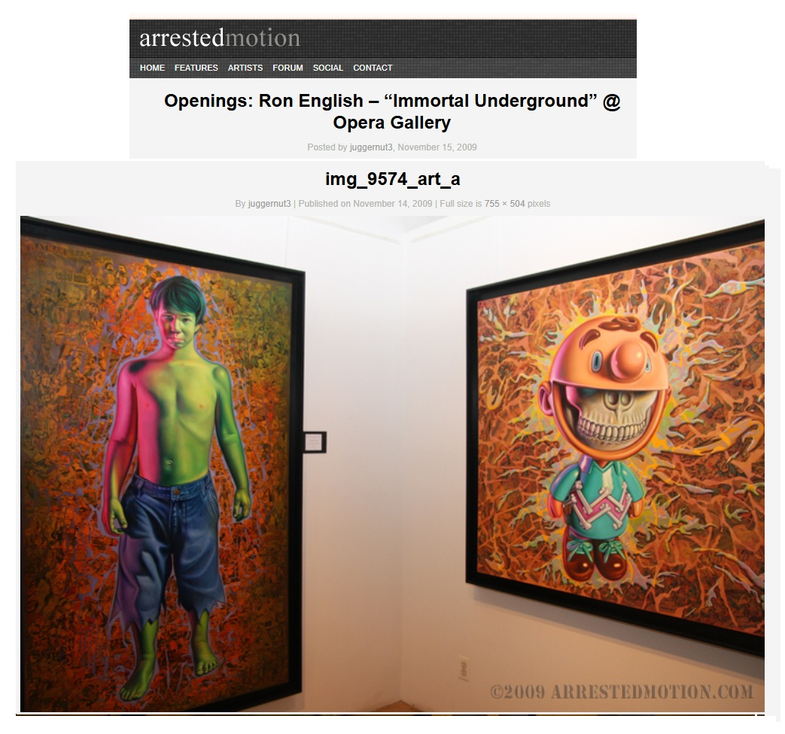
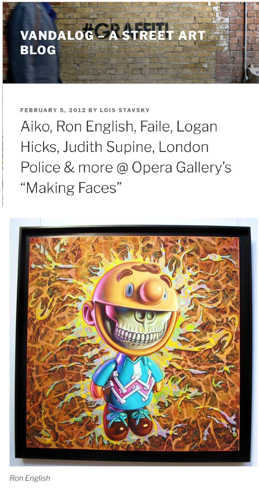

Exhibitions
Immortal Underground, Opera Gallery, New York, New York, US, November 12–December 2, 2009.
Status Factory – The Art of Ron English, Frank M. Doyle Arts Pavilion (Orange Coast College), Costa Mesa, California, US, November 12–December 17, 2010.
Making Faces, Opera Gallery, New York, New York, US, January 27–February 19, 2012.
Welcome to New Jersey, Jonathan LeVine Projects @ Mana Contemporary, Jersey City, New Jersey, US, February 18–March 18, 2017.
Status Factory – The Art of Ron English, Frank M. Doyle Arts Pavilion (Orange Coast College), Costa Mesa, California, US, November 12–December 17, 2010.
Literature
Lois Stavsky, “Aiko, Ron English, Faile, Logan Hicks, Judith Supine, London Police & more @ Opera Gallery’s “Making Faces””, Vandalog – A Street Art Blog, 2012, p. 5.

Archival document, for “Status Factory: The Art of Ron English”, Orange County Center for Contemporary Art (OCCCA), November 10 - December 17, 2010.

Detail from Status Factory – The Art of Ron English.
Ancillary Documentation






Selected Online Circulation
Selected examples of the work’s online circulation, reproduction, or discussion. This list is not exhaustive; it is intended to document representative appearances of the image beyond formal exhibition and publication records.